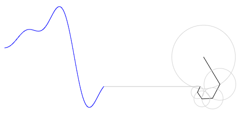
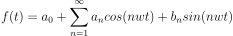

푸리에 선생님, 푸리에 급수를 익히기 위해서 무엇부터 시작하면 좋을까요?
1장: 파형의 생성
이 장에서는 푸리에 급수의 개념과 JavaScript를 통해 canvas 요소에 파형을 시각화하는 방법을 탐구합니다.
코르
푸리에
우선 기본적인 개념부터 알아봅시다. 푸리에 급수(Fourier series)란 복잡한 파동은 단순한 파동의 합으로 구성된다는 것으로, 공식으로는 다음과 같이 나타냅니다.
이때, 각속도 w는 2 * pi * f이며, f는 주파수입니다. f = 1 / T이므로 w = 2 * pi / T 라고도 쓸 수 있습니다. T는 주기입니다.
한편 a0, an, bn을 푸리에 계수(Fourier coefficient)라고 하며, 이는 아래의 공식에 따라 계산될 수 있습니다.


계수가 구해지는 원리는 간단합니다.
먼저, a0부터 살펴보겠습니다. 아시다시피, f(t) = sin(t)를 0에서 한 주기인 2pi만큼 적분하면 그 변화량은 0입니다. +인 면적과 -인 면적이 동일하기 때문입니다. 이는 f(t) = sin(2t), f(t) = cos(3t) 등에서도 동일할 것입니다. 한편, a0은 푸리에 급수 식에 나와있듯이 상수값으로서 0에서 한 주기까지 적분하면 그 넓이가 나오게 됩니다. 따라서, 이 넓이를 주기 T (사각형의 가로라고 생각합시다) 로 나눠주게 되면 a0값 (세로) 을 얻을 수 있게 됩니다.
an과 bn 또한 비슷한 원리입니다. 이것은 재미있는 사실입니다만, 모든 파동은 자기 자신을 제외하고 서로 곱한 후 한 주기만큼 적분하면 그 변화량은 0이 되어버립니다. 더욱이 재미있는 것은 자기 자신과 곱하고 한 주기만큼 적분하면 0이 되지 않고 그 넓이가 an (혹은 bn) * (T/2)가 됩니다. 따라서, 양변을 T/2로 나누면 이것이 우리가 원하던 an, bn이 되겠습니다.
이제 실습해 보겠습니다. 단 이번 실습에서는 위에서 알아본 내용을 사용하는 것이 아니라, 선들을 회전시킴으로써 얻을 수 있는 파동의 형태를 관찰할 것입니다.
우선 html파일과 js파일을 생성하고 html파일에 id가 cvs인 canvas 요소를 생성합시다. 이후, script 요소를 만들고 방금 생성한 js파일을 연결합니다.
<!DOCTYPE html>
<html>
<head>
<meta charset="utf-8">
<title>파형 생성</title>
</head>
<body>
<canvas id="cvs" width="1000" height="800" style="border: 1px solid black;"></canvas>
<script src="방금 생성한 js파일 이름.js"></script>
</body>
</html>
이제 js파일을 작성합시다. 먼저 html문서에 생성한 canvas 요소에 대한 참조를 얻습니다.
const $cvs = document.getElementById('cvs');
const cctx = $cvs.getContext('2d');
이제 시각화를 위한 변수들을 선언합니다.
const offset = { x: 600, y: 200 }; // 회전하는 선의 중심점
const waveformPosition = 400; // 파동이 그려질 x좌표
const scaler = 100; // 값 확대용 상수
const period = 300; // 주기
let deg = 0; // 각도
// 선의 길이
const lines = [
(1 / (-1 * Math.PI)),
(1 / (2 * Math.PI)),
(1 / (-3 * Math.PI)),
(1 / (4 * Math.PI)),
(1 / (-5 * Math.PI))
];
const path = []; // 파동의 자취
const drawCount = 200; // 파동의 자취를 얼마만큼 그릴 것인지를 결정하는 값
이제, 캔버스상에 파동을 그리는 함수 draw()를 정의해 봅시다.
function draw() {
window.requestAnimationFrame(draw); // 계속해서 파동이 그려지도록 함
cctx.clearRect(0, 0, $cvs.width, $cvs.height); // 초기화
const v = { x: 0, y: 0 }; // 벡터
// 선 수만큼 벡터를 생성
for (let n = 0; n < lines.length; n++) {
const radius = Math.abs(scaler * lines[n]);
// 원
cctx.beginPath();
cctx.strokeStyle = 'lightgray';
cctx.arc(offset.x + v.x, offset.y + v.y, radius, 0, 2 * Math.PI);
cctx.stroke();
// 선
cctx.beginPath();
cctx.strokeStyle = 'black';
cctx.moveTo(offset.x + v.x, offset.y + v.y);
// (중요) 선을 회전시킵니다.
// ※ n은 0부터 시작하므로 (n + 1)을 하여 1wt, 2wt, ... 가 표현되도록 하였습니다.
v.x += scaler * lines[n] * Math.cos((n + 1) * 2 * Math.PI * deg / period);
v.y += scaler * lines[n] * Math.sin((n + 1) * 2 * Math.PI * deg / period);
// draw()의 매 호출마다 회전된 위치에 선을 그리며, 다음 선의 시작 위치는 이전 선의 끝 위치입니다.
cctx.lineTo(offset.x + v.x, offset.y + v.y);
cctx.stroke();
}
// 파동을 그리는 선
cctx.beginPath();
cctx.strokeStyle = 'silver';
cctx.moveTo(offset.x + v.x, offset.y + v.y);
cctx.lineTo(waveformPosition, offset.y + v.y);
cctx.stroke();
// 파동
if (path.length === drawCount) {
path.shift(); // drawCount만큼만 파동이 그려지도록 함
}
path.push({ x: waveformPosition, y: v.y });
cctx.beginPath();
cctx.strokeStyle = 'blue';
for (let i = 0; i < path.length; i++) {
if (i === 0) {
cctx.moveTo(path[path.length - 1].x, offset.y + path[path.length - 1].y);
} else {
cctx.lineTo(path[path.length - 1 - i].x - i, offset.y + path[path.length - 1 - i].y);
}
}
cctx.stroke();
if (deg === period - 1) {
deg = 0;
} else {
deg++;
}
}
window.requestAnimationFrame(draw);
이제 모든 준비는 끝났습니다. html파일을 실행시키면 파동이 그려지는 것을 볼 수 있을 것입니다.
변수 lines 의 값과 Math.sin(), Math.cos() 내의 n값을 조정하며 다양한 파동을 그려 봅시다.
const lines = [
(1 / (1 * Math.PI)),
(1 / (3 * Math.PI)),
(1 / (5 * Math.PI)),
(1 / (7 * Math.PI)),
(1 / (9 * Math.PI))
];
v.x += scaler * lines[n] * Math.cos((2 * n + 1) * 2 * Math.PI * deg / period);
v.y += scaler * lines[n] * Math.sin((2 * n + 1) * 2 * Math.PI * deg / period);